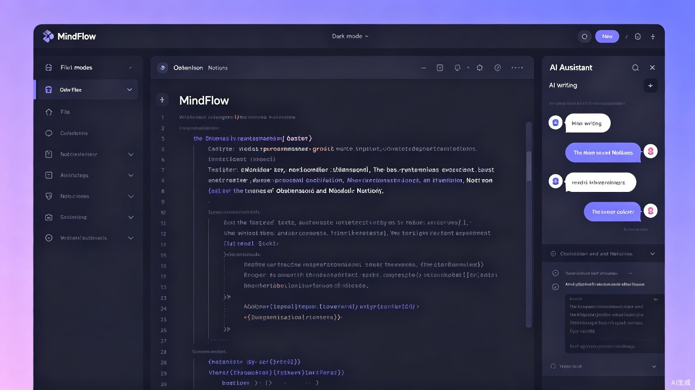

AI 驱动的智能笔记与知识管理系统
让每一次记录都成为知识的流动
现有的笔记软件呈现出两极分化的困境：一端是功能单一的传统 Markdown 编辑器，无法满足知识网络构建的深度需求；另一端是功能繁杂的重型工具（如 Notion、Obsidian），学习曲线陡峭且对普通用户门槛过高。用户在知识记录与整理过程中，频繁遭遇写作卡顿、结构混乱、信息孤岛等痛点，严重阻碍了知识的持续积累与高效输出。
作为 Obsidian 的资深用户，我深切体会到双向链接与本地优先存储带来的知识管理自由。然而，当面对空白的编辑页面时，缺少原生 AI 辅助成为最大的效率瓶颈。我时常需要在笔记软件与 AI 对话工具之间来回切换，打断心流。这促使我思考：如果将 Obsidian 的开放灵活与 AI 的智能辅助无缝融合，会诞生怎样的笔记体验？
MindFlow（思流）是一款基于本地优先 + 云同步架构的跨平台桌面端笔记软件（支持 Windows / macOS / Linux），深度集成 AI 助手，专注于 Markdown 写作体验与知识网络构建。它既保留了纯文本的开放性与可迁移性，又通过 AI 赋能实现了智能化的写作辅助与知识管理。

需要整理课堂笔记、文献批注、论文大纲，构建系统化学科知识体系。
产品经理、咨询师、律师等需要持续输出结构化文档与行业洞察的专业人士。
技术写作者、独立博主、专栏作者，追求高效的 Markdown 写作与内容发布流程。
需要维护技术文档、项目 Wiki、API 文档，偏好版本控制友好的纯文本格式。
MindFlow 通过 AI 实时辅助写作，可将用户的内容产出效率提升 30% 以上。智能续写、一键润色、自动摘要等功能消除了"写作卡顿"时刻；AI 自动标签建议与双向链接推荐将知识整理成本降低一半以上。用户从"记录后整理"转变为"记录即整理"，让知识管理融入写作的自然流程。
在信息爆炸的时代，高质量知识的生产与传播变得尤为重要。MindFlow 致力于降低知识系统化管理的技术门槛，让更多人——不仅是技术专家——能够建立属于自己的知识体系。当知识的记录、整理、复用变得 effortless，个体的学习效能将指数级提升，进而促进整个社会的知识共享与智力资本的积累。
此外，MindFlow 坚持本地优先的数据策略，用户的笔记默认存储在本地设备，可选择性地进行端到端加密的云同步。这一设计理念保障了用户对自己数据的完全控制权，符合日益严格的全球数据隐私保护趋势。
MindFlow 采用现代化的分层架构，兼顾性能、安全与可扩展性。前端基于 Tauri 框架构建跨平台桌面应用，后端 AI 能力支持本地模型与云端 API 双模式，确保用户在不同网络环境下都能获得流畅的 AI 辅助体验。
flowchart TB
subgraph UI["🖥️ 前端界面层"]
Editor["Markdown 编辑器\n(CodeMirror 6)"]
Sidebar["AI 助手侧边栏"]
Graph["知识图谱可视化"]
end
subgraph Core["⚙️ 核心逻辑层"]
Engine["渲染引擎"]
Linker["双向链接解析器"]
Search["全文检索\n(FlexSearch)"]
Sync["同步引擎"]
end
subgraph AI["🤖 AI 服务层"]
LocalLLM["本地模型\n(Llama / Mistral)"]
CloudAPI["云端 API\n(OpenAI / Claude)"]
Router["智能路由"]
end
subgraph Storage["💾 数据层"]
LocalDB["本地存储\n(SQLite + 文件系统)"]
CloudSync["加密云同步"]
Export["导出模块\n(PDF / HTML / MD)"]
end
UI --> Core
Core --> AI
Core --> Storage
AI --> Router
Router --> LocalLLM
Router --> CloudAPI